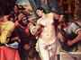
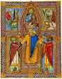

< < < Back
The Fountain Of Patriarchy – Return Of Kings
Two of my chief aims with my articles on ROK, are to give glory to God, and to aptly describe theological truths in terms suited to men. Today’s article, I hope, will do both by touching upon a theme suitable both to the season and to this website: Christ the King. While this topic has many particularly Catholic meanings, today I use a broader brush.
“Patriarchy” is much maligned in our days, despite being the ennobling and civilizing force that it is; while many men have shaken free from much of the bogus propaganda against masculinity, some men remain sympathetic to complaints against the source of patriarchy—God, the King and All-Father. The Feast of Christ the King comes near the end of the Liturgical year, on the last Sunday in October, emphasizing that the divine Kingdom which will be fully realized on Earth at the Parousia, exists even now and has rights over the world.
The world is in a disastrous state at present; the noblest and manliest principles in society have been besieged with special ferocity for five centuries now, at the hands of a revolutionary action against legitimate authority. Whether of King, Priest, Husband or Father, perverse revolutionaries wish to abolish the offices of manly headship; we have inherited a culture almost entirely lacking them, in any authentic form.
Men Must Lead In Private And Public Life
A woman flourishes only under the protection and supervision of a man. Women generally lack a certain self-sufficiency, and their beliefs and sentiments are influenced largely by their emotional ties to others. Men can more easily stick to reason and principle despite pressures and attachment. A man can trust a woman to be sensible only so far, nearer or farther based on her quality; but in the end, a man understands that he cannot, must not, rely on a woman to stay the course indefinitely, piloting herself by the ship of reason.
He must provide an attractive and compelling pre-eminence in himself, to which she may uplift her gaze and give her loyalty. Then, when her inner resources falter, her devotion will have been trained towards him habitually. In a good man, the effort so to acclimate a woman to himself has her benefit equally in mind as his own, and both in accord with reason and justice.
Carrie Nation: “Bible-Believing” Church Lady, or Herald of the Dawning, Satanic Age?
The concept of “game” hits upon this perennial truth about the sexes. Some men use “game” contrary to reason and nature; I think that, so long as “game” puts a man in touch with the facts of nature, grants him a more masculine comportment, and imparts a sensitivity to his role and responsibilities as a man, a natural leader of women, it is a good thing.
In this sense, what we call “game,” our great-grandfathers called simple horse-sense. Every good husband should give his wife the gift of a stalwart but benevolent leader. He loves his wife, but knows that she neither wants nor is able to be free from the ennobling guidance and prudent protection of her lord husband. He must be the man to whom her instincts are trained, and he should strive to be worthy of that position; he must manage her emotions wisely and manfully. Certainly he must not meet her emotional needs in the manner she insists upon, which is likely not only to be wrong, but even to be a (perhaps subconsciously) calculated attempt at probing him for weakness, or at self-justification.
Masculinity Is An Analogue Of Divine Sovereignty
In one sense, we can say that God is “beyond gender.” But in another, equally true sense, masculinity, maleness, paternity, are qualities more likened unto the divinity, whereas femininity, womanliness and motherhood are qualities more likened unto the whole order of creation. This is because masculinity is the active and fecundating principle; femininity is the passive and fecundated principle.
The more a thing is ruled and acted upon, the more feminine it is; the more it is (authentically) active, the more masculine. God is Actus Purus, Pure Act, pure Fatherhood; He is the Father “from whom all fatherhood in heaven and earth derives its name,” of which our manhood is a proportioned manifestation. Creation exists along a spectrum of being more or less feminine, more or less masculine, in a sense, as it aligns with act or potential.
No, I’m not saying that every man has a “feminine side,” but I am saying that every man, in relation to His Maker, is a subject, is ruled, is in a dependent position, and that this is more analogous to the feminine than the masculine. But of course, as a man, the particular nature of his sex is an analogue of the Fatherhood, the Kingdom, the Priesthood, of God.
In future articles I’ll talk more about this, and about how—in Christianity, at least—the spiritual life is described as a direct participation in God… i.e., how God helps the creature to become more manly, more excellent, more free, more strong, more active, more like Himself by participation in Himself. The spiritual life is a deifying, and therefore a masculinizing, process. And the services for many of the female saints praise precisely this element of their character: that they became more manly than many men.
“O God, Who, amongst other wonders of Thy power, hast conferred the martyr’s triumph even upon the fragile sex; grant propitiously, that we who remember the birth unto eternal life of Blessed Agatha, Thy virgin and martyr, may advance towards Thee by her example.” – For the Commemoration of St. Agatha
One also sees that God has given men a special insight into His relationship to the creation, by virtue of our intermediary position as male creatures; we have something of the ruler and something of the subject within ourselves. Our experience as the masters of womankind gives us some insight into God’s experience with all of us; our experience as subjects of God gives us insight into a woman’s subordination (and, often enough, inconstancy).
This should make us better subjects of God, and better rulers of women and society. Sometimes I find men drawing near to the Red Pill who still have flatly immature ideas about God and atheism—ideas fully supported by the same propagandists that brought us Feminism, Socialism, etc. Often this involves objections to God’s rigidity, His intolerance, His use of force, His jealous mastery that brooks no rival.
But these are the complaints by which a feminist derides the actually beneficial qualities of patriarchy. “Red Pill” men usually see the crisis caused by the absence of male influence, but male influence is a shade of the Divine: the Supreme Masculine, the forceful vindicator of Good and punisher of evil, from Whom there could be no appeal. If society needs a king, if it needs a priest, if it needs husbands and fathers, let it look to Him from Whom these offices proceed. If we wonder why the world rejects patriarchy and authority, I will tell you: it is because it first rejected the High King Himself.
Christ Crowns Holy Roman Emperor St. Henry II, while angels bestow sword and scepter upon him, and sainted clergy support him.
The Feast of Christ the King stands at the center of the Church’s reaction to an aggressive liberalism. It came in the wake of centuries of ideological and military revolutions in the West—Protestantism, Humanism, Atheism, Republicanism, Democracy, Socialism and Communism. The Church took pains to affirm that God had rights not only over the spiritual realm and the Church, but over all society, over all men, over all nations, which absolutely trump any imagined “human right” formed in abstraction from the principles of Truth and Justice.
To attempt to establish a system of “rights” abstracted from what is Right, is to aid the rebellion of infirmity and folly against Strength and Wisdom. And this is why our times are literally perverse (from Latin perverto, “turn all the way around”), that is, upside-down; Democracy and Republicanism exalt demagogues and mobs over justice itself; Feminism inverts the natural dynamic of the sexes; Socialism and Social Marxism demand the forfeiture of the fruits of a society’s creators to its venal consumers; the gay agenda attempts to equate health and fecundity with disease and sterility. The theme is the same: Righteous, Manly Authority is bad; it wants to stop us from voting for free dildos.
I invite men to reflect on the great right and dignity of being a man, of belonging to the sex upon whose brow lordliness and mastery sit by right. I encourage them to reflect on what obligations and duties this involves; to reflect upon what a man must strive to be, if he is worthy of the title, man.
I encourage them to reflect on the limitations of the fairer sex, and how we should strive to purge any womanliness from our character, and to grow manlier, more like God, by virtue. If we value authority, justice, truth, mastery and excellence in the created order, let us direct our gaze to the supreme Masculine, the supreme Origin of all Fatherhood, and to the highest of all Kings. To reject Him, especially for His quality of inflexible dominion, is to reject a particularly masculine quality of our own souls, and to be allies of the Revolution against noble patriarchy.
Reconciliation with the principle of righteous authority – rather than “democratic fairness” – is an indispensable precedent to a true return of kings.
Read More: Why We Need To Fight For The Patriarchy


{kind=link}
{kind=link}
{kind=link}